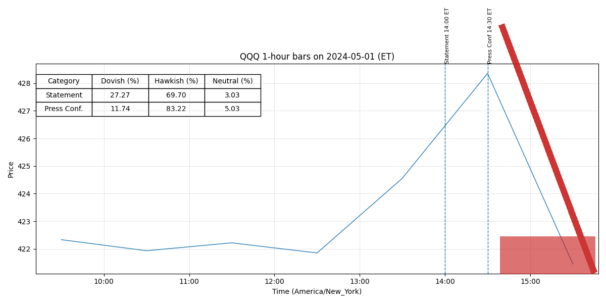

Pres 20240501
Legend: Interpretation of Colors and Intensities
- Dovish (green): easing, lower rates, accommodative policy.
- Neutral (yellow): balanced or data-dependent stance.
- Hawkish (red): tightening, higher rates, restrictive policy.
Color intensity = strength of stance (darker = stronger).
Purple highlight = newly added strong sentences.
May 1, 2024 Chair Powell’s Press Conference FINAL
Transcript of Chair Powell’s Press Conference
May 1, 2024
CHAIR POWELL.
Good afternoon.
My colleagues and I remain squarely focused on
our dual mandate to promote maximum employment and stable prices for the American people.
The economy has made considerable progress toward our dual-mandate objectives.
Inflation has
eased substantially over the past year, while the labor market has remained strong.
And that’s
very good news.
But inflation is still too high, further progress in bringing it down is not
assured, and the path forward is uncertain.
We are fully committed to returning inflation to our
2 percent goal.
Restoring price stability is essential to achieve a sustainably strong labor market
that benefits all.
Today, the FOMC decided to leave our policy interest rate unchanged and to continue to
reduce our securities holdings, though at a slower pace.
Our restrictive stance of monetary
policy has been putting downward pressure on economic activity and inflation, and the risks to
achieving our employment and inflation goals have moved toward better balance over the past
year.
However, in recent months, inflation has shown a lack of further progress toward our
2 percent objective, and we remain highly attentive to inflation risks.
I’ll have more to say about
monetary policy after briefly reviewing economic developments.
Recent indicators suggest that economic activity has continued to expand at a solid pace.
Although GDP growth moderated from 3.4 percent in the fourth quarter of last year to
1.6 percent in the first quarter, private domestic final purchases—which excludes inventory
investment, government spending and net exports, and usually sends a clearer signal on
underlying demand—was 3.1 percent in the first quarter, as strong as the second half of 2023.
Consumer spending has been robust over the past several quarters, even as high interest rates
Page 1 of 26
May 1, 2024 Chair Powell’s Press Conference FINAL
have weighed on housing and equipment investment.
Improving supply conditions have
supported resilient demand and the strong performance of the U.S. economy over the past year.
The labor market remains relatively tight, but supply and demand conditions have come
into better balance.
Payroll job gains averaged 276,000 jobs per month in the first quarter, while
the unemployment rate remains low at 3.8 percent.
Strong job creation over the past year has
been accompanied by an increase in the supply of workers, reflecting increases in participation
among individuals aged 25 to 54 years and a continued strong pace of immigration.
Nominal
wage growth has eased over the past year and the jobs-to-workers gap has narrowed, but labor
demand still exceeds the supply of available workers.
Inflation has eased notably over the past year but remains above our longer-run goal of
2 percent.
Total PCE prices rose 2.7 percent over the 12 months ending in March; excluding the
volatile food and energy categories, core PCE prices rose 2.8 percent.
The inflation data
received so far this year have been higher than expected.
Although some measures of short-term
inflation expectations have increased in recent months, longer-term inflation expectations appear
to remain well anchored, as reflected in a broad range of surveys of households, businesses, and
forecasters, as well as measures from financial markets.
The Fed’s monetary policy actions are guided by our mandate to promote maximum
employment and stable prices for the American people.
My colleagues and I are acutely aware
that high inflation imposes significant hardship, as it erodes purchasing power, especially for
those least able to meet the higher costs of essentials like food, housing, and transportation.
We
are strongly committed to returning inflation to our 2 percent objective.
The Committee decided at today’s meeting to maintain the target range for the federal
funds rate at 5¼ to 5½ percent and to continue the process of significantly reducing our securities
Page 2 of 26
May 1, 2024 Chair Powell’s Press Conference FINAL
holdings, though at a slower pace.
Over the past year, as labor market tightness has eased and
inflation has declined, the risks to achieving our employment and inflation goals have moved
toward better balance.
The economic outlook is uncertain, however, and we remain highly
attentive to inflation risks.
We’ve stated that we do not expect that it will be appropriate to reduce the target range
for the federal funds rate until we have gained greater confidence that inflation is moving
sustainably toward 2 percent.
So far this year, the data have not given us that greater confidence.
In particular, and as I noted earlier, readings on inflation have come in above expectations.
It is
likely that gaining such greater confidence will take longer than previously expected.
We are
prepared to maintain the current target range for the federal funds rate for as long as appropriate.
We’re also prepared to respond to an unexpected weakening in the labor market.
We know that reducing policy restraint too soon or too much could result in a reversal of
the progress we’ve seen on inflation.
At the same time, reducing policy restraint too late or too
little could unduly weaken economic activity and employment.
In considering any adjustments
to the target range for the federal funds rate, the Committee will carefully assess incoming data,
the evolving outlook, and the balance of risks.
Policy is well positioned to deal with the risks
and uncertainties that we face in pursuing both sides of our dual mandate.
We will continue to
make decisions meeting by meeting.
Turning to our balance sheet: The Committee decided at today’s meeting to slow the
pace of decline in our securities holdings, consistent with the plans we released previously.
Specifically, the cap on Treasury redemptions will be lowered from the current $60 billion per
month to $25 billion per month as of June 1.
Consistent with the Committee’s intention to hold
primarily Treasury securities in the longer run, we’re leaving the cap on agency securities
Page 3 of 26
May 1, 2024 Chair Powell’s Press Conference FINAL
unchanged per month, and we will reinvest any proceeds in excess of this cap in Treasury
securities.
With principal payments on agency securities currently running at about $15 billion
per month, total portfolio runoff will amount to roughly $40 billion per month.
The decision to
slow the pace of runoff does not mean that our balance sheet will ultimately shrink by less than it
would otherwise but rather allows us to approach its ultimate level more gradually.
In particular,
slowing the pace of runoff will help ensure a smooth transition, reducing the possibility that
money markets experience stress and thereby facilitating the ongoing decline in our securities
holdings that are consistent with reaching the appropriate level of ample reserves.
We remain committed to bringing inflation back down to our 2 percent goal and to
keeping longer-term inflation expectations well anchored.
Restoring price stability is essential to
set the stage for achieving maximum employment and stable prices over the longer run.
To conclude: We understand that our actions affect communities, families, and
businesses across the country.
Everything we do is in service to our public mission.
We, at the
Fed, will do everything we can to achieve our maximum-employment and price-stability goals.
Thank you.
I look forward to your questions.
MICHELLE SMITH.
Howard.
HOWARD SCHNEIDER.
Howard Schneider with Reuters.
A question and
follow-up if I could, do you consider the current policy rate still—are you confident that it’s
sufficiently restrictive to get inflation back to 2 percent?
CHAIR POWELL.
So I do think the evidence shows, you know, pretty clearly that
policy is restrictive and is weighing on demand, and there are a few places I would point to for
that.
You can start with the labor market.
So demand is still strong—the demand side of the
labor market, in particular—but it’s cooled from its extremely high level of a couple years ago,
Page 4 of 26
May 1, 2024 Chair Powell’s Press Conference FINAL
and you see that in job openings.
You saw it—more evidence of that today in the JOLTS report,
as you’ll know.
It’s still higher than pre-pandemic.
But it has been coming down both in the
Indeed report and the JOLTS report.
That’s, that’s demand cooling.
The same is true of quits
and hiring rates, which have essentially normalized.
I also look at the—we look at surveys of
workers and—pardon me—surveys of workers and businesses, and [they] ask workers, “Are jobs
plentiful?”
and ask businesses, “Are workers plentiful?
Is it easy to find workers?”
And you’ve
seen that the answers to those have come back down to pre-pandemic levels.
You also see in
interest-sensitive spending, like housing and investment—you also see that higher interest rates
are weighing on those activities.
So I do think it’s clear that, that policy is restrictive.
Sufficiently restrictive, I guess.
So I would say that we believe it is restrictive, and we believe [that]
over time it will be sufficiently restrictive.
That will be a question that, that the data will have to
answer.
So as a follow-up, if inflation continues running roughly
sideways as it has been, the job market stays reasonably strong, unemployment low, and
expectations are anchored and maintained, would you disrupt that for—
CHAIR POWELL.
Expectations are not anchored?
Are anchored.
Stable, roughly.
Would you disrupt that for the last half point
on PCE?
Page 5 of 26
May 1, 2024 Chair Powell’s Press Conference FINAL
CHAIR POWELL.
You know, I don’t want to get into complicated hypotheticals.
But I
would say that, you know, we’re committed to retaining our current restrictive stance of policy
for as long as is appropriate.
And we’ll do that.
Jeanna.
JEANNA SMIALEK.
Thanks for taking our questions, Chair Powell.
I wonder—you
know, obviously Michelle Bowman has been saying that there is a risk that rates may need to
increase further, although it’s not her baseline outlook.
I wonder if you see that as a risk as well,
and, if so, what change in conditions would merit considering raising rates at this point?
So I think it’s unlikely that the next policy rate move will be a hike.
I’d say it’s unlikely.
You know, our policy focus is really what I just mentioned, which is—
which is how long to keep policy restrictive.
You ask, what would it take?
You know, I think
we’d need to see persuasive evidence that our policy stance is not sufficiently restrictive to bring
inflation sustainably down to 2 percent over time.
That’s not—that’s not what we think we’re
seeing, as I—as I mentioned, but that’s—something like that is what it would take.
We’d look at
the totality of the data in answer to that question.
That would include inflation, inflation
expectations, and all the other data too.
Would that be—would that be a reacceleration in inflation?
Well, I think, again, the test—what I’m saying is, if we were to come
to that conclusion that policy weren’t tight enough to achieve that, so it would be the totality of
all the things we’d be looking at.
It could be expectations.
It could be a combination of things.
But, if we—if we reach that conclusion—and we don’t see evidence supporting that
conclusion—that’s what it would take I think for us to take that step.
Chris.
Page 6 of 26
May 1, 2024 Chair Powell’s Press Conference FINAL
CHRISTOPHER RUGABER.
Thank you, Chris Rugaber at Associated Press.
You
didn’t mention the idea that rates are at a peak for the cycle and didn’t mention the idea that it
might be appropriate to cut rates later this year as you have in previous press conferences.
So
has the Fed sort of dropped its easing bias?
Where are you standing on that?
So, on—let me address cuts.
So, obviously, our decisions that we
make on our policy rate are going to depend on the incoming data, how the outlook is evolving,
and the balance of risks, as always.
And we’ll look at the totality of the data.
So I think, and we
think, that policy is well positioned to address different paths that the economy might take.
And
we’ve said that we don’t think it would be appropriate to dial back our restrictive policy stance
until we’ve gained greater confidence that inflation is moving down sustainably toward
2 percent.
So, for example, let me take a path: If we did have a path where inflation proves
more persistent than expected and where the labor market remains strong, but inflation is moving
sideways and we’re not gaining greater confidence, well, that would be a case in which it could
be appropriate to hold off on rate cuts.
I think there’s also other paths that the economy could take, which, which would cause us
to want to consider rate cuts.
And those would be—two of those paths would be that we do gain
greater confidence, as we’ve said, that inflation is moving sustainably down to 2 percent, and
another path could be, you know, an unexpected weakening in the labor market, for example.
So
those are paths in which you could see us cutting rates.
So I think it really will depend on the
data.
In terms of peak rate, you know, I think, really, it’s the same question.
I, I think the data
will have to answer that question for us.
Page 7 of 26
May 1, 2024 Chair Powell’s Press Conference FINAL
CHRISTOPHER RUGABER.
And could you just follow—on the path where you might
not cut, is that—you mentioned that would be inflation persistent—I mean, is inflation—would
that be the key data in making that decision, or could you expand a bit more on that?
Again, it’s, it’s—we’ve set ourselves a test that we—for us to begin
to reduce policy restriction, we’d want to be confident that inflation is moving—you know,
moving sustainably down to 2 percent, and, for sure, one of the things we’d be looking at is the
performance of inflation.
We’d also be looking at inflation expectations.
We’d be looking at the
whole story.
But clearly, incoming, incoming inflation data would be at the very heart of that
decision.
CHRISTOPHER RUGABER.
NICK TIMIRAOS.
Nick Timiraos of the Wall Street Journal.
Chair Powell, to what
extent has the easing in financial conditions since November contributed to the reacceleration in
growth, and do you now expect a period of sustained tighter financial conditions will be needed
to resume the sort of disinflation the economy saw last year?
So I think it’s hard to know that.
I think we’ll be able to look back,
you know, from down the road and look back and understand it better.
You know, if you look
at—let’s look at growth.
Really, what we’ve seen so far this year in the first quarter is growth
coming in about consistent with where it was last year.
I know GDP came in lower, but you
don’t see an acceleration in growth.
I mean, the thought would be that financial conditions
loosened in, in, December, and that caused an uptick in activity, and that caused inflation.
Presumably, that’s what we’re tightening in the labor market.
You don’t really see that
happening.
What you see is economic activity at a level that’s roughly the same as, as last year.
Page 8 of 26
May 1, 2024 Chair Powell’s Press Conference FINAL
So, you know, what’s causing this inflation?
You know, we’ll, we’ll have a better sense of that
over time.
I don’t know that there’s an obvious connection there, though, with easing of
financial conditions.
In terms of tightening, you’re, you’re right.
Rates are certainly higher now
and have been for some time than they were before the December meeting.
And they’re higher,
and that’s tighter financial conditions.
And, you know, that’s appropriate, given what inflation
has done in the first quarter.
You’ve said in the past that stronger growth wouldn’t necessarily
preclude rate cuts.
I wonder, would continued strength in the labor market change your view
about the appropriate stance of policy if it was accompanied by signs the wage growth was
reaccelerating?
So I just want to be careful that we don’t target wage growth or the
labor market.
And remember what we saw last year: very strong growth, a really tight labor
market, and a historically fast decline in inflation.
So—and that’s because we know there are
two forces at work here.
There’s the unwinding of the pandemic-related supply-side distortions
and demand-side distortions, and there’s also monetary policy, you know, restrictive monetary
policy.
So I wouldn’t rule out that something like that can continue.
You know, I wouldn’t give
up, at this point, on further things happening on the supply side either because, you know, we do
see that companies still report that there are supply-side issues that they’re facing.
And also,
even when the supply-side issues are solved, it should take some time for that to affect economic
activity and ultimately inflation.
So there are still those things.
So I don’t like to say that either
strong—either growth or, or a strong labor market, in and of itself, would automatically create
problems on inflation, because, of course, it didn’t do that last year.
Page 9 of 26
May 1, 2024 Chair Powell’s Press Conference FINAL
You ask about wages.
We also don’t—we don’t target wages.
We target price inflation.
It is one of the inputs.
The point with wages is, of course, we, like everyone else, like to see high
wages, but we also want to see them not eaten up by high inflation.
And that’s really what we’re
trying to do, is to cool the economy and work with what’s happening on the supply side to
bring—to bring the economy back to 2 percent inflation.
Part of that will probably be having
wage increases move down incrementally toward levels that are more sustainable.
Rachel.
RACHEL SIEGEL.
Hi, Chair Powell.
Rachel Siegel from the Washington Post.
Thanks
for taking our questions.
You talked about needing time to gain more confidence that inflation is
sustainably moving back down to 2 percent.
It’s May now.
Do you have time this year to cut
three times, just given the calendar?
I’m not really thinking of it that way.
You know, the—what
we said is that we need to be more confident, and we’ve said—my colleagues and I today said
that we didn’t see progress in the first—in the first quarter.
And I’ve said that it appears, then,
that it’s going to take longer for us to reach that point of confidence.
So I don’t know how long
it’ll take.
You know, I can just say that when we get that confidence, then rate cuts will be in
scope.
And I don’t know exactly when that will be.
And, with hindsight, are there any signs that you can look back on
now, looking at the reports from January or February or March, that suggested something more
worrying than just expected bumpiness?
I—you know, not really.
You know, what, what—so I thought it was
appropriate to reserve judgment until, until we had the full quarter’s data, until we saw the March
data.
And so take a step back.
What do we now see in the first quarter?
We see strong economic
Page 10 of 26
May 1, 2024 Chair Powell’s Press Conference FINAL
activity, we see a strong labor market, and we see inflation.
We see three inflation readings, and
so I think you’re at a point there where you should take some signal.
We don’t like to react to
one or two months’ data, but this is a full quarter.
And I think it’s appropriate to take signal now,
and we are taking signal.
And the signal that we’re taking is that it’s likely to take longer for us
to gain confidence that we are on a sustainable path down to 2 percent inflation.
That’s the
signal that we’re taking now.
Steve.
STEVE LIESMAN.
Mr. Chair, if I could—Steve Liesman, CNBC.
If I could follow up
on that: What particular areas were sort of temporary or blips in the inflation data in the first
quarter?
What’s the dynamic by which you expect them to work out in the coming months and
quarters?
So we will—you know, we will put the thing—we have put
the thing under a microscope.
I will say, nothing is going to come out of that that’s going to
change the view.
I think that, in fact, we didn’t gain confidence and that it’s going to take longer
to get that confidence—but—confidence.
I just think—you know the story.
What’s happened
since December is you’ve seen higher goods inflation than expected, and you’ve seen higher
nonhousing services inflation than expected.
And those two are working together to, to sort of be
higher than we had thought.
And there are stories behind how that happened, and, you know,
we—I think—I think my expectation is that we will, over the course of this year, see inflation
move back down.
That’s, that’s my forecast.
I think my confidence in that is lower than it was
because of the data that we’ve seen.
So, you know, we’re looking at those things.
We also
continue to expect, and I continue to expect, that housing services inflation, given where market
rents are, those will show up in measured housing services inflation over time.
We believe that it
Page 11 of 26
May 1, 2024 Chair Powell’s Press Conference FINAL
will.
It just—it looks like the lag—that there are substantial lags between when, you know,
lower market rates turned up and—for new tenants and when it shows up for existing tenants or
for in-housing services.
If I could just follow up: Is there a bit of a contradiction in the idea
that you are reducing quantitative tightening, which is sort of an easing, while you’re holding
rates steady at a restrictive rate to try to slow and cool the economy and inflation?
I wouldn’t say that.
I mean, the active tool of monetary policy
is, of course, the interest rates.
And this is—this is a long—a plan we’ve long had in place to
slow, really not in order to, you know, provide accommodation to the economy but to—or to be
less restrictive to the economy.
It really is to ensure that the process of shrinking the balance
sheet down to where we want to get it is a smooth one and doesn’t wind up in—with financial
market turmoil the way it did the last—the last time we did this and the only other time we’ve
ever done this.
Craig.
CRAIG TORRES.
Craig Torres from Bloomberg.
Two questions.
First, a simple one.
Given the run of data since March, has the probability in your mind of no cuts this year increased
or stayed the same?
That’s the first question.
Second question.
Chair Powell, you joined the
Board in 2012, and I’m sure you remember, as I do, what the jobless recovery was like: lawyers,
accountants, all kinds of highly qualified people who couldn’t get jobs.
And given your history
there, I wonder if there’s an argument for being more patient with inflation here.
We have strong
productivity growth that’s helping wages grow up—go up.
We have good employment.
And so
it seems to me there’s a lot of hysteria about inflation.
I agree—you know, nobody likes it, but is
Page 12 of 26
May 1, 2024 Chair Powell’s Press Conference FINAL
there an argument for being patient and working with the economic cycle to get it down over
time?
So, on your first question, I don’t have a probability estimate for you.
But all I can say is that, you know, we’ve said that we didn’t think it would be appropriate to cut
until we were more confident that inflation was moving sustainably down to 2 percent.
We
didn’t get our confidence, in that [it] didn’t increase in the first quarter.
And, in fact, what really
happened was we came to the view that it will take longer to get that confidence.
And I think
there are—you know, I think it’s—the economy has been very hard for forecasters broadly to
predict—to predict its path.
But there are paths to, to not cutting, and there are paths to cutting.
It’s really going to depend on the data.
In terms of the employment mandate, to your point, if you go back a couple of years, our,
our sort of framework document says that, when you look at the two mandate goals, and if one of
them is further away from goal than the other, then you focus on that one.
It actually—it’s the
time to get back there times the, you know, times how far it is from the goal.
And that was
clearly inflation.
So our focus was very much on inflation.
As—and this is what we referred to
in the statement.
As inflation has come down, now to below 3 percent on a—on a 12-month
basis, it’s become—we’re now focusing [on] the other goal.
The employment goal now comes
back into focus.
And so we are focusing on it.
And, and that’s how we think about that.
Claire.
CLAIRE JONES.
Claire Jones, Financial Times.
Thanks a lot for the opportunity to ask
the questions.
Just to go back to the answer before the previous one, it seemed to suggest that
you think the likeliest path of inflation is one that’s going to allow you to have a situation where
rates are lower at the end of the year than they are right now.
It’d be good if you could just
Page 13 of 26
May 1, 2024 Chair Powell’s Press Conference FINAL
confirm whether or not that’s a correct reading.
And the Q1 GDP print has led to some—some to
start mentioning the term “stagflation” with respect to the U.S. economy.
Do you or anyone else
on the FOMC think this is now a risk?
I’m not dealing really in likelihoods.
I think there are—there
are paths that the economy can take that would involve cuts and there are paths that wouldn’t.
And I don’t have great confidence in which of those paths—I think I would say my personal
forecast is that we will begin to see further progress on inflation this year.
I don’t know that it
will be enough, sufficient.
I don’t know that it won’t.
I think we’re going to have to let the data
lead us on that.
In terms of your question—your second question was stagflation.
I guess I would say I
was around for stagflation, and it was, you know, 10 percent—10 percent unemployment.
It was
high single-digits inflation.
Right now we have—and very slow growth—so right now we have
3 percent growth, which is, you know, pretty solid growth I would say, by any measure, and we
have inflation running under 3 percent.
So I don’t—I don’t really understand where that’s
coming from.
And, in addition, I would say most forecasters, including our forecasting, was that
last year’s level of growth was very high—3.4 percent in, I guess, the fourth quarter, you know—
and probably not going to be sustained and would come down.
But that would be—that would
be our forecast.
That wouldn’t be stagflation.
That would still be to a very healthy level of
growth.
And, of course, with inflation, you know, our—we will return inflation to 2 percent, and
that won’t be—so I don’t see the “stag” or the “flation,” actually. [
Laughter]
MICHELLE SMITH.
Michael McKee.
MICHAEL MCKEE.
Michael McKee from Bloomberg Radio and Television.
The Vice
Chair of the FOMC said recently that he’s willing to consider the idea that potential growth has
Page 14 of 26
May 1, 2024 Chair Powell’s Press Conference FINAL
moved up.
And, of course, he’s “Mr. Potential Growth/r*.”
Do you share that view, and would
that imply that maybe policy isn’t tight enough?
So I think I would take that question this way: We saw a year of
very high productivity growth in 2023, and we saw a year of, I think, negative productivity
growth in 2022.
So I think it’s hard to draw from the data.
I mean, the question is, will
productivity run—there are two questions.
One is: Will productivity run persistently above its
longer-run trend?
I don’t think we know that.
In terms of potential output, though, that’s a
separate question.
We’ve had a—what amounts to a, a significant increase in the potential output
of the economy that’s not about productivity.
It was about having more labor, frankly, both
through—in 2022, both through participation and also through immigration.
So we’re very
much—like other forecasters and economists—getting our arms around what that means for
potential output this year and next year—and last year for that matter, too.
So I think—in that
case, I think you really do have a significant increase in potential output, but you’ve also got—so
you’ve got more supply.
But those people also come in, they work, they have jobs, they spend.
So you’ve also got demand.
So it—there may be—it may be that you get more supply than you
get demand at the beginning, but, ultimately, it should be neither inflationary nor disinflationary
over, over a longer period.
You said earlier that, at this point, you’re not really considering
rate increases.
If growth is higher, but you’re not considering rate increases, does that imply that
you’re more worried about causing the economy to slow too much than you are about inflation
taking off again?
I think we, we believe our policy stance is in a good place and is
appropriate to the current situation.
We believe it’s restrictive, and, you know, we—our evidence
Page 15 of 26
May 1, 2024 Chair Powell’s Press Conference FINAL
for that, I went over earlier.
You see it in the labor market.
You see it in inflation-sensitive
spending, where demand has clearly come down a lot over the past few years.
And that’s, that’s
more from monetary policy, whereas the supply side of things that are happening are more on the
supply side.
So that’s how I would think about it.
Edward.
EDWARD LAWRENCE.
Thank you, Mr. Chairman.
Edward Lawrence from Fox
Business.
So GDP growth is about 2 percent.
Inflation—[Un]employment is about 4 percent.
It
feels a lot like a steady state, and we have 3 percent inflation.
So if the data remains the same
that you’re seeing, and I know you said you don’t see a rate hike, but it stands to reason that you
would need a rate hike to get from 3 to 2 percent inflation.
So was there any discussion about a
rate hike in today’s meeting, and, you know, are you satisfied with 3 percent inflation for the rest
of the year?
Well, of course we’re not satisfied with 3 percent inflation. “
Three
percent” can’t be in a sentence with “satisfied.” [
Laughter] So we will return inflation to
2 percent over time but over time.
And we think our policy stance is, is appropriate to do that.
So if we were to conclude that policy is not sufficiently restrictive to bring inflation sustainably
down to 2 percent, then that would be what it would take for us to want to increase rates.
We
don’t see that.
We don’t see evidence for that.
So that’s where we are.
Was there discussion about a rate hike at all?
So the policy focus has been on—has really been on what to do
about, about holding the current—the current level of restriction.
That’s really—that’s part of the
policy.
That’s where the policy discussion was in the meeting.
Page 16 of 26
May 1, 2024 Chair Powell’s Press Conference FINAL
EDWARD LAWRENCE.
I wanted to follow [up] on the 3 percent.
Is there a time frame
of persistent inflation that would trigger a rate hike?
There isn’t any rule.
You can’t look to a rule.
You know, these are—
these are going to be judgment calls.
You know, clearly restrictive monetary policy needs more
time to do its job.
That, that is pretty clear, based on what we’re seeing.
How long that will take
and how patient we should be is going to depend on the totality of the data, how the outlook
evolves.
Victoria.
VICTORIA GUIDA.
Victoria Guida with Politico.
You’ve talked about your
commitment to being apolitical and nonpartisan.
And I was just wondering, given that it’s an
election year, is the bar for rate changes higher close to an election?
And, similarly, is there a
significant economic difference between, you know, starting to cut in, say, September versus
December?
So we’re, we’re always going to do what we think the right thing for
the economy is when we come to that consensus view that it’s the right thing to do for the
economy.
That’s our record.
That’s what we do.
We’re not looking at anything else.
You know,
it’s hard enough to get the economics right here.
These are difficult things, and if, if we were to
take on a whole, another, set of factors and use that as a new filter, it would reduce the likelihood
we’d actually get the economics right.
So that’s how we think about it around here.
And, you
know, we’re at peace over it.
We know that we’ll do what we think is the right thing, when we
think it’s the right thing.
And we’ll all do that.
And that’s, that’s how everybody around here
thinks.
So I can’t say it enough, that we just don’t—we just don’t go down that road.
If you go
down that road, where do you stop?
And, and so we’re not on that road.
We’re on the road
Page 17 of 26
May 1, 2024 Chair Powell’s Press Conference FINAL
where we’re serving all the American people and making our decisions based on the data and
how those data affect the outlook and the balance of risks.
And then, is there a significant difference between, you know,
whether you start in, say, September versus December?
There’s—
VICTORIA GUIDA.
An economic difference.
CHAIR POWELL. —
a significant difference between an institution that takes into
account all sorts of political events and one that doesn’t.
That’s where the significant difference
is, and, you know, we’re—we just don’t do that.
I mean, you can go back and read the
transcripts for every—this is my fourth election, fourth presidential election here.
Read all the
transcripts, and see if anybody mentions, in any way, the pending election.
It just isn’t part of
our thinking.
It’s not what we’re hired to do.
If we start down that road, again, I don’t know
how you stop.
Simon.
SIMON RABINOVITCH.
Thank you, Chair Powell.
Question about the labor market—
you’ve mentioned a few times that the labor market is normalizing.
Certainly, today’s JOLTS
data suggested that things are kind of getting back to pre-pandemic levels.
One thing that hasn’t
normalized is wage growth, which is still quite a bit stronger than before the pandemic.
I wonder
if you can share your analysis of, of why that’s happening.
Is it a lagging indicator, or is
something else going on?
So I think if you go back to where wages peaked—wage increases
peaked a couple, three years ago—essentially all wage measures have come down substantially
[when compared] to that.
But they are not, not down to where they were before the pandemic.
Page 18 of 26
May 1, 2024 Chair Powell’s Press Conference FINAL
They’re still roughly a percentage point higher.
And we’ve seen pretty consistent progress but
not uniformly.
And you’ll note the ECI reading from Tuesday was—it was expected to be—to
have come down, and, essentially, it was flat year over year, you know, I think roughly.
So yeah,
I mean, it’s—that part of it is bumpy.
And, again, we don’t target wage increases, but, you know,
in the longer run, if you have—if you have wage increases running higher than productivity
would warrant, then, you know, there will be inflationary pressures.
Employers will raise prices
over time if that’s the case.
So we’ve seen progress.
It has been inconsistent, but we have seen a
substantial decline overall.
But we have a ways to go on that.
Scott.
Nancy.
I’m sorry.
NANCY MARSHALL-GENZER.
Hey, Chair Powell.
Nancy Marshall-Genzer from
Marketplace.
You mentioned consumers, and consumers are feeling the weight of interest rates
right now.
Mortgage rates are up, as are rates for car loans, credit cards.
People looking to
borrow are very discouraged.
That’s reflected in their views on the economy.
What would you
say to them?
Well, the thing that hurts everybody, and particularly people in the
lower-income brackets, is inflation.
If you’re a person who’s living paycheck to paycheck, and
suddenly all the things you buy—the fundamentals of life—go up in price, you, you are in
trouble right away.
And so, with those people in mind, in particular, what we’re doing is, we’re
using our tools to bring down inflation.
It will take some time, but we will succeed.
And we will
bring inflation back down to 2 percent, and then people won’t have to worry about it again.
That’s what we’re doing, and we know that it’s painful and inconvenient.
But the dividends will
be paid and will be very large.
And, and everyone will share in those dividends, and we’ve made
quite a lot of progress if you can think about it.
I think core—I think headline—core PCE
Page 19 of 26
May 1, 2024 Chair Powell’s Press Conference FINAL
[inflation] peaked at 5.8 [percent].
Now it’s at—anyway, headline peaked at 7.1.
Now it’s at 2.7.
Don’t want to get that wrong.
No, you don’t.
Quick follow-up—are current interest
rates really doing that much, though, to fight inflation right now for those consumers?
I mean, I think—I think that restrictive monetary policy is
doing what it’s supposed to do, and it’s—but it’s also, in this case unusually, working alongside
and with the healing of the supply side.
This, this—what was different this time was that a big
part of the source of the inflation and the reason why we’re having this conversation is that we
had this supply-side kind of collapse, with shortages and bottlenecks and all that kind of thing.
And so—and this was to do with the shutting down and reopening of the economy and other
things that, that really raised demand.
So, many factors did that.
So I think now you see those
two things working together, the reversal of those supply and demand distortions from the
pandemic and the response to it, along with restrictive monetary policy.
Those two things are
working to bring down inflation, and we’ve made a lot of progress.
Let’s remember how far
we’ve come.
And we have a ways to go.
We’ve got work left to do, but we’re not looking at the
very high inflation rates that we were seeing two years ago.
Courtenay.
COURTENAY BROWN.
Courtenay Brown from Axios.
Thanks for taking our
questions, Chair Powell.
I wanted to follow up on something you mentioned earlier on housing
inflation.
There’s kind of been this long-awaited disinflation in shelter that still hasn’t arrived.
So I guess two questions, how do you explain the substantial lags between some of the private-
sector data we’re seeing and the government data, and how confident are you that rents will be
helpful on the inflation front in the coming months?
Page 20 of 26
May 1, 2024 Chair Powell’s Press Conference FINAL
CHAIR POWELL.
So, essentially, there are—there are a number of places in the
economy where there are just lag structures built into the inflation process, and housing is one of
them.
So when you have—when, when someone goes to—a new person goes to rent an
apartment, that’s called market rent, and you can see market rents are barely going up at all.
The
inflation in those has been very low.
But it takes—before that, they were incredibly high.
They
sort of led the, the high part.
So what happens is, those market rents take years, actually, to get
all the way into rents for tenants who are rolling over their leases.
Landlords don’t tend to
charge as much of an increase to a rollover tenant, for whatever reason.
And what that does is it
builds up a sort of an unrealized portion of increases when there have been big increases.
And
what happens is, you know—it’s complicated, but the story is it just takes some time for that to
get in.
Now I am confident that, as long as market rents remain low, this is going to show up in
measured inflation, assuming that market rents do remain low.
How—what will be the exact
timing of it?
I think we’ve learned that the lags are longer.
We now think significantly longer
than we thought at the beginning, and so confident that it will come but not so confident in the
timing of it.
But, yes, I expect that, that this will happen.
Thanks.
Nick Jasinski.
NICHOLAS JASINSKI.
Thank you, Chair Powell, for taking the questions.
This is
Nicholas Jasinski from Barron’s Magazine.
It seems that over the past three or four years,
economies and central banks in developed markets, at least, have been on more or less the same
trajectory: easing during the pandemic, fighting inflation with restrictive policy on the way out.
It feels like that may be ending in 2024 based on some of the economic data from Europe and the
U.S. and Japan and statements from those central banks as well.
So my question is, what, what
Page 21 of 26
May 1, 2024 Chair Powell’s Press Conference FINAL
considerations or risks does a period of more divergent global economic trajectories and central
bank policies present for the FOMC?
So that—you’re right.
I think that, that may happen, and, you know
that we all serve domestic mandates, right?
So I think the difference between the United States
and other countries that are now considering rate cuts is that they’re just not having the kind of
growth we’re having.
They have—their inflation is performing about like ours or maybe a little
better, but they’re not experiencing the kind of growth we’re experiencing.
So we actually have
the luxury of having strong growth and a strong labor market, very low unemployment, high job
creation, and all of that, and we can be patient.
And we will—we’ll be careful and cautious as
we approach the decision to cut rates, whereas I think other jurisdictions may go before that.
In terms of the implications, you know, I think obviously markets see it coming.
It’s
priced in now.
And so I think the markets and economies can adapt to it.
And I think, you know,
we haven’t seen—in addition, for the emerging market economies, we haven’t seen the kind of
turmoil that was more frequent 20 years ago, 30 years ago.
And that’s, I think, partly because
emerging market countries, many of them have much better monetary policy frameworks, much
more credibility on inflation.
And so they’re navigating this pretty well this time.
Jennifer.
JENNIFER SCHONBERGER.
Jennifer Schonberger with
Yahoo Finance.
You sort of backed away from the notion that the economy would need to
encounter pain for inflation to come back down.
But, given the sticky inflation data in the first
quarter, can disinflation still happen along a relatively painless path for the economy, or is some
softening in the labor market and the economy likely needed to bring inflation back down?
Page 22 of 26
May 1, 2024 Chair Powell’s Press Conference FINAL
CHAIR POWELL.
So you’re right.
I think we thought, and most people thought, there
would have to be probably significant dislocations somewhere in the economy, perhaps the labor
market, to get inflation all the way down from the very high levels it was at at the beginning of
this episode.
That didn’t happen.
That’s a tremendous result.
We’re very, of course, gratified
and pleased that that hasn’t happened.
And, if you look at the dynamics that enabled that, it
really was that this, the—that so much of the gain was from the unwinding of things that weren’t
to do with monetary policy but the unwinding of the distortions to the economy, you know,
supply problems—supply-side problems and also some, some demand issues as well.
The
unwinding of those really helped inflation come down.
Now, as I’ve said, I’m not giving up on
that.
So I think—I think it is possible that, that those forces will still work to help us bring
inflation down.
We can’t—we can’t be guaranteed that that’s true, though.
And so we’re—you
know, we’re trying to use our tools in a way that keeps the labor market strong, and the economy
strong, but also helps bring inflation back down to 2 percent sustainably.
We will bring inflation
down to 2 percent sustainably.
We hope we can do it without, you know, without significant
dislocations in the labor market or elsewhere.
And speaking of dislocations in the labor market: In
terms of cutting, you said, if there were weakness in the job market, that could be a reason to cut
rates.
So if the unemployment rate were to tick above 4 percent but inflation not back down to
your 2 percent target, how would you look at that?
Would the unemployment rate popping back
above 4 percent catch your attention?
You know, I said “an unexpected weakening” is what I—the way I
characterized it.
So, you know—and I’m not going to try to define exactly what I mean by that.
But, you know, it would be—it would have to be meaningful and get our attention and lead us to
Page 23 of 26
May 1, 2024 Chair Powell’s Press Conference FINAL
think that the labor market was really significantly weakening for us to want to react to it.
A
couple of tenths in the unemployment rate would be—would probably not do that.
But a
broader—it would be a broader thing that would—that would suggest that it would be
appropriate to consider cutting.
I think whether you decide to cut will depend on all the facts and
circumstances, not just that one.
KYLE CAMPBELL.
Chair Powell, thanks for taking the question.
Kyle Campbell with
American Banker.
You’ve said that broad and material changes are needed for the Basel III
Endgame proposal, and you’ve mentioned that a re-proposal is something that’s on the table.
As
you’ve had more time to sort of sit with the public commentary, process that, and understand the
options available to you, do you have a better sense of whether a re-proposal will be necessary,
and do you have a timeline in mind for when, you know, some sort of movement will be made on
that front—either a re-proposal or a move to finalize?
So let me—let me start by saying that the Fed is committed to, you
know, completing this process and carrying out Basel III Endgame in a way that’s faithful to
Basel and also comparable to what the other large comparable jurisdictions are doing.
We
haven’t made any decisions on, on policy or on process at all.
Nothing.
No decisions
have been made.
I’ll say again, though, if we conclude that re-proposal is appropriate, we won’t
hesitate to insist on that.
And then do you need to resolve issues with the capital proposal in
order to advance other parts of the regulatory agenda, or do you expect to continue to make
progress on those other agenda items?
Page 24 of 26
May 1, 2024 Chair Powell’s Press Conference FINAL
CHAIR POWELL.
You know, there’s no mechanical rule in place there.
But I would say
that the, you know, the Basel III process is by far the most important thing and really is, I think,
occupying us at this time in terms of what’s, what’s—what we’re moving ahead with.
Let’s go to Mark for the last question.
MARK HAMRICK.
Mark Hamrick with Bankrate.
Mr. Chairman, what
can you tell us about the approach that you take with your role in the sense of trying to achieve
consensus, which you recently identified as a priority, while allowing for a range of views or
even dissent?
We don’t see many dissenting votes in the official statements, even when more
spirited discussions are noted in the minutes after the fact.
How do you avoid groupthink and
avoid a higher risk of a policy mistake?
So I think if you listen to, and you all do, listen to my 18 colleagues
on the FOMC, you’ll see that we do not lack for a diversity of voices and perspectives.
We
really don’t.
And it’s one of the great aspects of the Federal Reserve System.
We have
12 Reserve Banks around the country where they have their own economic staff, not the people
who work here at the Board.
There are different people.
You know, and so each, each Reserve
Bank has its own culture around monetary policy and its own approach and that kind of thing.
It
guarantees you a diversity of perspectives.
So I think that the perspectives are very diverse.
But—and, in terms of—in terms of dissents, you know, we have dissents.
And, you
know, a thoughtful dissent is a good thing, if someone really makes you think, that kind of thing.
But all I can say from my standpoint is I try—I listen carefully to people.
I try to incorporate
their thinking or do everything I can to incorporate their thinking into what we’re doing.
And I
think many people, if they feel that’s happening, you know, that for most people most of the
Page 25 of 26
May 1, 2024 Chair Powell’s Press Conference FINAL
time, that’ll be enough.
And—but I’m not—I mean, it’s, it’s not, you know, frowned upon or
illegal or against the rules or anything like that.
It just is the way things come out.
And I mean, I think we have a very diverse group of rounded people—frankly, more
diverse than it used to be in many dimensions, more diverse from the obvious gender and
demographic ways, but also we have more people who are not Ph.D. economists.
So we have
people from business and law and academia and things like that.
So I think we actually do have
quite a good diverse perspective.
I think all of us read these stories about the lack of diversity,
and we look around the room and say, “I don’t understand.
I really don’t understand what
they’re talking about.”
So—but I get the question, though.
Thank you very much.
Page 26 of 26
